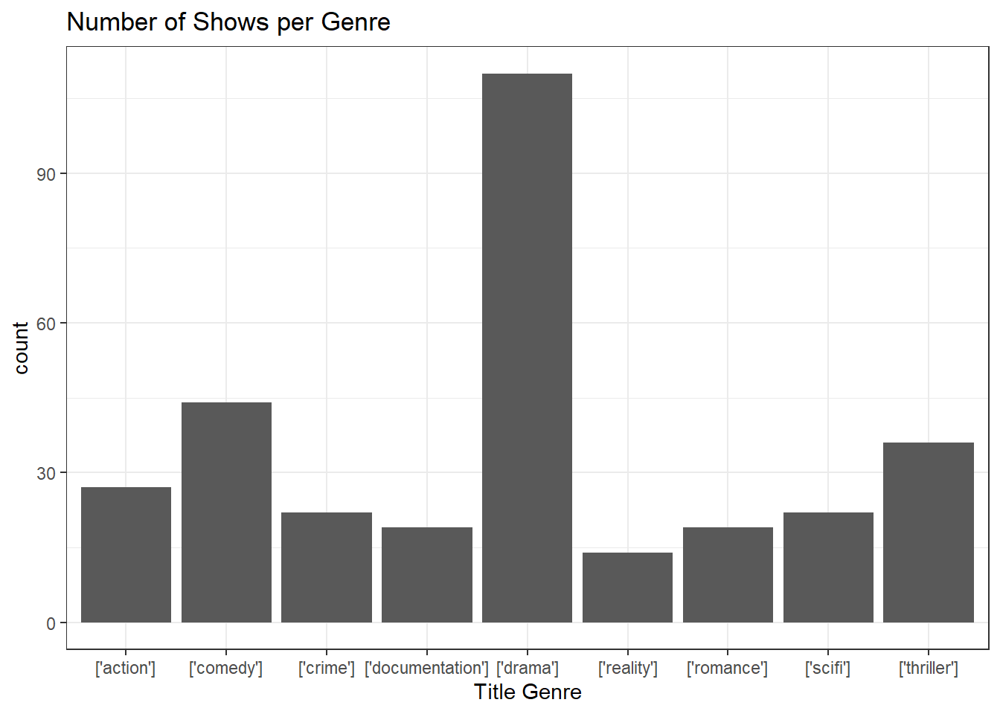

library(tidyverse)
library(ggplot2)Stats 155 Final Project, Popularity of Netflix Films Based on Viewership
Libraries:
Data Cleaning:
#The runtime of the shows listed is in minutes and represents how long on average ONE episode of the show is/how long the movie is.
# Original Data from Kaggle and removed variables not interested in. Using select().
movieTitles <- read_csv("titles.csv") %>%
rename(show_title = title) %>%
mutate(seasons = ifelse(is.na(seasons), 0, seasons)) %>%
select(-type, -description, -age_certification, -imdb_id, -id)
# IMDB Database and removed variables not interested in.
globalViewership <- read_csv("all-weeks-global.csv") %>%
select(-season_title, -runtime, -weekly_views, -episode_launch_details, -weekly_rank) %>%
mutate(week = as.character(week)) %>%
filter(grepl('2022', week)) %>%
group_by(show_title, category) %>%
summarise(total_views = sum(weekly_hours_viewed),
cumulative_top10 = sum(cumulative_weeks_in_top_10)) %>%
mutate(total_views = total_views/10000)
# The cleaned dataset afteer joining both movieTitles and globalViewership data. Cleaned for very nieche outliers (consulted with Jed).
cleaned_data <- globalViewership %>%
inner_join(movieTitles, by = "show_title") %>%
mutate(genre1=gsub(",.*","]",genres),
filteredproduction_countries=gsub(",.*","]",production_countries)) %>%
select(-genres, -production_countries) %>%
filter(cumulative_top10 < 100)
counted_genres <- cleaned_data %>%
group_by(genre1) %>%
filter(cumulative_top10 < 100) %>%
summarise(count = n(), .groups = 'drop') %>%
filter(count >= 10)
# Final Dataset, it has titles that only have genres that appear more than 10 times in the Netlfix Top 10.
filtered_data <- cleaned_data %>%
semi_join(counted_genres, by = "genre1")
# Introduction (Table 1)
summary(filtered_data)Visualizations:
Boxplot that shows the runtime of each type of media (category).
ggplot(cleaned_data, aes(x = runtime, category)) +
geom_boxplot() +
labs(title = "Runtime of shows based on the media type",
x = "Media Runtime (Minutes)",
y = "Media Category") +
theme_bw()Scatterplot that addresses our main predictor of interest. Total hours viewed of a Netlfix title predicted by its runtime.
ggplot(filtered_data, aes(x = runtime, y = total_views)) +
geom_point() +
labs(title = "Total Views on Media vs Runtime",
x = "Media Runtime (Minutes)",
y = "Total Hours Viewed (in 10000 Hours)") +
theme_bw()Barplot that shows how many Netlfix titles in the top 10 that have are of a certain genre. This was filtered to only display the genres with 10 or more observations.
ggplot(filtered_data, aes(x = genre1)) +
geom_bar() +
labs(title = "Number of Shows per Genre", x = "Title Genre") +
theme_bw()
Both visualizations below show the total hours viewed predicted by TMDB scores and IMDB scores (two different rating scores that do the same thing).
ggplot(cleaned_data, aes(x = tmdb_score, y = total_views, color = category)) +
geom_point(alpha = 0.6) +
geom_smooth(method = "lm", se = FALSE) +
labs(title = "TMDb Score vs Total Hours Viewed",
x = "TMDb Score",
y = "Total Hours Viewed (10,000s)") +
theme_bw()Warning: Removed 2 rows containing non-finite outside the scale range
(`stat_smooth()`).Warning: Removed 2 rows containing missing values or values outside the scale range
(`geom_point()`).cleaned_data %>%
ggplot(aes(x = imdb_score, y = total_views, color = category)) +
geom_point(alpha = 0.6) +
geom_smooth(method = "lm", se = FALSE) +
labs(title = "IMDb Score vs Total Hours Viewed",
x = "IMDb Score",
y = "Total Hours Viewed (in 10000s)") +
theme_bw()Warning: Removed 12 rows containing non-finite outside the scale range
(`stat_smooth()`).Warning: Removed 12 rows containing missing values or values outside the scale range
(`geom_point()`).Model Testing:
# Testing different predictors for the total hours viewed.
model1 <- lm(total_views ~ runtime, filtered_data)
model2 <- lm(total_views ~ runtime + cumulative_top10, filtered_data)
model3 <- lm(total_views ~ imdb_score + tmdb_score, filtered_data)
# The summaries for each testing model, this is where we dictate whether or not these are good predictors.
summary(model1)
Call:
lm(formula = total_views ~ runtime, data = filtered_data)
Residuals:
Min 1Q Median 3Q Max
-10445 -4798 -2731 162 87495
Coefficients:
Estimate Std. Error t value Pr(>|t|)
(Intercept) 11260.17 1404.19 8.019 2.18e-14 ***
runtime -62.16 15.62 -3.978 8.64e-05 ***
---
Signif. codes: 0 '***' 0.001 '**' 0.01 '*' 0.05 '.' 0.1 ' ' 1
Residual standard error: 10460 on 311 degrees of freedom
Multiple R-squared: 0.04843, Adjusted R-squared: 0.04537
F-statistic: 15.83 on 1 and 311 DF, p-value: 8.64e-05summary(model2)
Call:
lm(formula = total_views ~ runtime + cumulative_top10, data = filtered_data)
Residuals:
Min 1Q Median 3Q Max
-37848 -2684 -866 1131 53329
Coefficients:
Estimate Std. Error t value Pr(>|t|)
(Intercept) 7074.32 1116.88 6.334 8.39e-10 ***
runtime -60.17 12.02 -5.007 9.31e-07 ***
cumulative_top10 439.40 29.91 14.690 < 2e-16 ***
---
Signif. codes: 0 '***' 0.001 '**' 0.01 '*' 0.05 '.' 0.1 ' ' 1
Residual standard error: 8042 on 310 degrees of freedom
Multiple R-squared: 0.439, Adjusted R-squared: 0.4354
F-statistic: 121.3 on 2 and 310 DF, p-value: < 2.2e-16summary(model3)
Call:
lm(formula = total_views ~ imdb_score + tmdb_score, data = filtered_data)
Residuals:
Min 1Q Median 3Q Max
-15270 -5229 -2617 1661 84314
Coefficients:
Estimate Std. Error t value Pr(>|t|)
(Intercept) -18287.6 4489.6 -4.073 5.96e-05 ***
imdb_score 120.7 703.0 0.172 0.864
tmdb_score 3413.9 844.2 4.044 6.71e-05 ***
---
Signif. codes: 0 '***' 0.001 '**' 0.01 '*' 0.05 '.' 0.1 ' ' 1
Residual standard error: 10420 on 296 degrees of freedom
(14 observations deleted due to missingness)
Multiple R-squared: 0.09471, Adjusted R-squared: 0.08859
F-statistic: 15.48 on 2 and 296 DF, p-value: 4.023e-07# The final model that best illustrates our research question, and our data explorations.
model_main <- lm(total_views ~ runtime + category + genre1 + cumulative_top10, filtered_data)
summary(model_main)
Call:
lm(formula = total_views ~ runtime + category + genre1 + cumulative_top10,
data = filtered_data)
Residuals:
Min 1Q Median 3Q Max
-36016 -2033 -72 1546 48983
Coefficients:
Estimate Std. Error t value Pr(>|t|)
(Intercept) 4135.417 2808.310 1.473 0.141920
runtime 2.844 21.244 0.134 0.893588
categoryFilms (Non-English) -3806.178 1224.211 -3.109 0.002057 **
categoryTV (English) 7031.017 1887.698 3.725 0.000234 ***
categoryTV (Non-English) -316.335 1801.559 -0.176 0.860735
genre1['comedy'] -2157.965 1874.750 -1.151 0.250624
genre1['crime'] -2676.913 2221.548 -1.205 0.229165
genre1['documentation'] -5127.463 2351.101 -2.181 0.029972 *
genre1['drama'] -2444.279 1652.992 -1.479 0.140273
genre1['reality'] -5600.250 2665.749 -2.101 0.036494 *
genre1['romance'] -1632.669 2314.082 -0.706 0.481026
genre1['scifi'] -2459.885 2222.194 -1.107 0.269200
genre1['thriller'] -4034.708 1956.006 -2.063 0.040002 *
cumulative_top10 425.510 29.625 14.363 < 2e-16 ***
---
Signif. codes: 0 '***' 0.001 '**' 0.01 '*' 0.05 '.' 0.1 ' ' 1
Residual standard error: 7606 on 299 degrees of freedom
Multiple R-squared: 0.516, Adjusted R-squared: 0.495
F-statistic: 24.52 on 13 and 299 DF, p-value: < 2.2e-16# Test to compare our main model statement with a nested model that has only runtime and cumulative_top10 as predictors.
anova(model2, model_main)Analysis of Variance Table
Model 1: total_views ~ runtime + cumulative_top10
Model 2: total_views ~ runtime + category + genre1 + cumulative_top10
Res.Df RSS Df Sum of Sq F Pr(>F)
1 310 2.0049e+10
2 299 1.7296e+10 11 2752259985 4.3253 5.25e-06 ***
---
Signif. codes: 0 '***' 0.001 '**' 0.01 '*' 0.05 '.' 0.1 ' ' 1# Getting the coefficients of our main model statement.
coef(model_main) (Intercept) runtime
4135.416643 2.844091
categoryFilms (Non-English) categoryTV (English)
-3806.177802 7031.016855
categoryTV (Non-English) genre1['comedy']
-316.334737 -2157.964616
genre1['crime'] genre1['documentation']
-2676.913077 -5127.462799
genre1['drama'] genre1['reality']
-2444.278917 -5600.249822
genre1['romance'] genre1['scifi']
-1632.668790 -2459.884990
genre1['thriller'] cumulative_top10
-4034.707850 425.510307